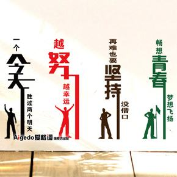
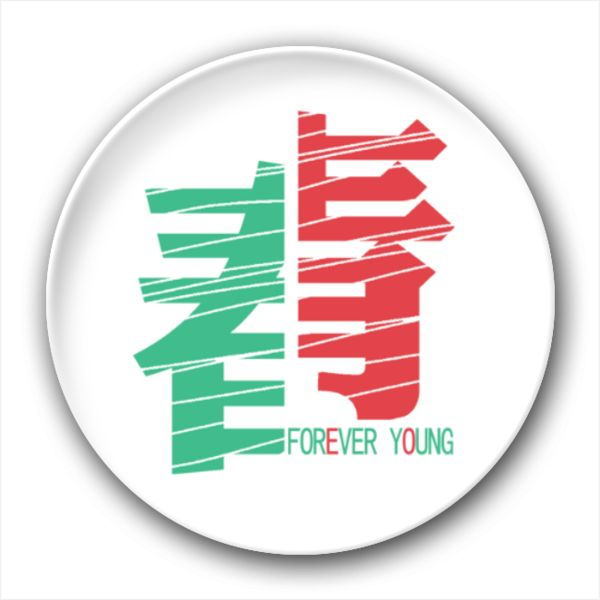
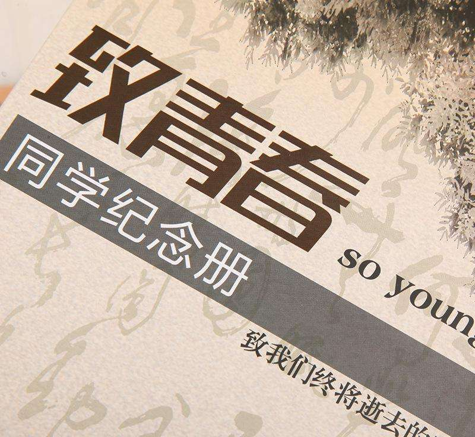

|  |
给你我的心作纪念，这份爱你随时打开都新鲜，有我陪伴多苦都变成甜，睁开眼就看见永远。给你我的心作纪念，我的梦有你的祝福才能够完全，风浪再大我也会勇往直前，我们的爱镶在青春的纪念册三年以后，我们踏上各自的旅途，虽然经历不同的故事.但不会忘记我们的>>>>>>>>>>>>>>>>>>>> |
| 青春被人说得太多，奋斗、激昂、爱慕、忧伤，每一天都被最丰满的情绪包围。它在未知的时候开始，又在不经意间结束。荒唐，荒诞总是伴随青春，那不需要太理性，充满了激情，性，情人，妄想，狂喜，狂想，酒精，甚至不好的体验。 | |
|  |
诗句忘乎所以地追寻着早已化为幻影的错觉，像留恋那个古老的夏日：无数人闭上双眼，躲闪青春的尾声，流云疾驰，时间无情；唯有那人的笑容，给我怀念，给我美好的旧时光阴。 |
|  |
所有的结局都已写好 所有的泪水也都已启程 .却忽然忘了是怎么样的一个开始 在那个古老的不再回来的夏日 无论我如何地去追索 年轻的你只如云影掠过 而你微笑的面容极浅极淡 逐渐隐没在日落后的群岚 命运将它装订得极为拙劣 含着泪 我一读再读 却不得不承认 青春是一本太仓促的书 |